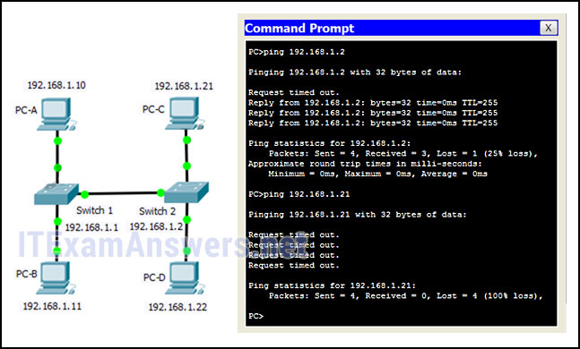

1.¿Cuál es la función del kernel de un software operativo?
- El kernel proporciona recursos de hardware para cumplir con los requisitos del software. *
- Proporciona una interfaz de usuario que permite a los usuarios solicitar una tarea específica.
- Es una aplicación que permite la configuración inicial de un dispositivo Cisco.
- El núcleo vincula los controladores de hardware con los componentes electrónicos subyacentes de una computadora.
- @javi__super
Explique:
los
sistemas operativos funcionan con un shell, un kernel y el hardware. El shell interactúa con los usuarios, lo que les permite solicitar tareas específicas desde el dispositivo. El kernel proporciona recursos del hardware para cumplir con los requisitos de software. Las funciones de hardware mediante el uso de controladores y sus componentes electrónicos subyacentes. El hardware representa los componentes físicos del dispositivo.
2.Un administrador de red debe mantener la identificación del usuario, la contraseña y los contenidos de la sesión en privado al establecer la conectividad CLI remota con un conmutador para administrarla. ¿Qué método de acceso se debe elegir?
- SSH *
- A
- Consola
- Telnet
- @javi__super
Explique:
para ser verdaderamente privado, un técnico usaría una conexión de consola, sin embargo, si se requiere administración remota, SSH proporciona un método seguro.
3.¿Qué procedimiento se usa para acceder a un switch Cisco 2960 cuando se realiza una configuración inicial en un entorno seguro?
- Use el puerto de la consola para acceder localmente al conmutador desde una interfaz serial o USB de la PC. *
- Utilice Telnet para acceder de forma remota al conmutador a través de la red.
- Utilice Secure Shell para acceder de forma remota al conmutador a través de la red.
- Utilice el puerto AUX para acceder localmente al conmutador desde una interfaz serial o USB de la PC.
- @javi__super
Explique:
Telnet y SSH requieren que los servicios de red activos estén configurados en un dispositivo Cisco antes de que funcionen. Los switches Cisco no contienen puertos AUX.
4.¿Qué comando o combinación de teclas permite a un usuario volver al nivel anterior en la jerarquía de comandos?
- salida *
- fin
- Ctrl-Z
- Ctrl-C
- @javi__super
Explique:
Fin y CTRL-Z devuelven al usuario al modo EXEC privilegiado. Ctrl-C finaliza un comando en proceso. El comando de salida devuelve al usuario al nivel anterior.
5.Un enrutador tiene un sistema operativo válido y un archivo de configuración almacenado en la NVRAM. El archivo de configuración contiene una contraseña secreta de habilitación pero ninguna contraseña de consola. Cuando se inicia el enrutador, ¿qué modo se mostrará?
- modo EXEC del usuario *
- modo de configuración global
- modo de configuración
- Modo EXEC privilegiado
- @javi__super
Explicar:
si un dispositivo Cisco IOS tiene un IOS válido y un archivo de configuración válido, se iniciará en el modo EXEC del usuario. Se requerirá una contraseña para ingresar al modo EXEC privilegiado.
6.¿Qué dos funciones se proporcionan a los usuarios mediante la función de ayuda contextual de la CLI de Cisco IOS? (Escoge dos.)
- mostrando una lista de todos los comandos disponibles dentro del modo actual *
- determinar qué opción, palabra clave o argumento está disponible para el comando ingresado *
- permitiendo al usuario completar el resto de un comando abreviado con la tecla TAB
- proporcionando un mensaje de error cuando se envía un comando incorrecto
- @javi__super
Explique:
la
ayuda sensible al contexto proporciona al usuario una lista de comandos y los argumentos asociados con esos comandos en el modo actual de un dispositivo de red. Un verificador de sintaxis proporciona verificaciones de errores en los comandos enviados y la tecla TAB se puede usar para completar el comando si se ingresa un comando parcial.
7.¿Qué información muestra el comando show startup-config?
- El contenido del archivo de configuración guardado en la NVRAM *
- El contenido del archivo de configuración actual en ejecución en la RAM
- el programa bootstrap en la ROM
- la imagen IOS copiada en la memoria RAM
- @javi__super
Explicar:
el
comando show startup-config muestra la configuración guardada ubicada en la NVRAM. El comando show running-config muestra el contenido del archivo de configuración actualmente en ejecución ubicado en la RAM.
8.¿Por qué es importante configurar un nombre de host en un dispositivo?
- para identificar el dispositivo durante el acceso remoto (SSH o telnet) *
- un router o switch Cisco solo comienza a funcionar cuando se configura su nombre de host
- un nombre de host debe configurarse antes que cualquier otro parámetro
- para permitir el acceso local al dispositivo a través del puerto de la consola
- @javi__super
Explicación:
es importante configurar un nombre de host porque varios procesos de autenticación usan el nombre de host del dispositivo. Los nombres de host son útiles para la documentación e identifican el dispositivo durante el acceso remoto.
9.¿Qué dos nombres de host siguen las pautas para nombrar las convenciones en los dispositivos IOS de Cisco? (Escoge dos.)
- RM-3-Switch-2A4 *
- SwBranch 799 *
- Piso (15)
- Branch2!
- @javi__super
Explique:
Algunas pautas para las convenciones de nombres son que los nombres deben:
Comenzar con una letra No
contener espacios.
Terminar con una letra o dígito.
Usar solo letras, dígitos y guiones.
Tener menos de 64 caracteres de longitud.
10.¿Cómo el comando de cifrado de contraseña de servicio mejora la seguridad de la contraseña en los routers y switches de Cisco?
- Cifra las contraseñas que están almacenadas en los archivos de configuración del enrutador o del conmutador. *
- Cifra las contraseñas a medida que se envían a través de la red.
- Requiere que un usuario escriba contraseñas encriptadas para obtener acceso de consola a un enrutador o conmutador.
- Requiere que se usen contraseñas cifradas cuando se conecta de forma remota a un enrutador o conmutador con Telnet.
- @javi__super
Explicación: el
comando de cifrado de contraseña de servicio cifra las contraseñas de texto sin formato en el archivo de configuración para que no puedan ser vistas por usuarios no autorizados.
11.En su opinión (esto no tiene relación con su calificación), indique qué tan entusiasmado está con respecto al contenido de este curso y las cosas que está aprendiendo (o ha aprendido):
- Entusiasta *
- No del todo entusiasta
- Un poco entusiasta
- Muy entusiasmado
- @javi__super
12.En su opinión (esto no tiene relación con su calificación), indique su interés en este curso:
- Interesado *
- Nada interesado
- Un poco interesado
- Muy interesado
- @javi__super
13.Consulte la presentación. Un administrador de red está configurando el MOTD en el switch SW1. ¿Cuál es el propósito de este comando?
- para mostrar un mensaje cuando un usuario accede al interruptor *
- para configurar el conmutador SW1 de modo que solo los usuarios del grupo de administradores puedan hacer telnet a SW1
- para obligar a los usuarios del grupo de administradores a ingresar una contraseña para la autenticación
- para configurar el interruptor SW1 de modo que el mensaje se muestre cuando un usuario ingresa el comando de habilitación
- @javi__super
Explique:
un mensaje de banner puede ser una parte importante del proceso legal en el caso de que alguien sea procesado por interrumpir un dispositivo. Un mensaje de banner debe dejar claro que solo el personal autorizado debe intentar acceder al dispositivo. Sin embargo, el comando de banner no impide la entrada no autorizada.
14.Al intentar resolver un problema de red, un técnico realizó varios cambios en el archivo de configuración del enrutador actual. Los cambios no resolvieron el problema y no se guardaron. ¿Qué acción puede tomar el técnico para descartar los cambios y trabajar con el archivo en la NVRAM?
- Ejecute el comando reload sin guardar la configuración en ejecución. *
- Elimine el archivo vlan.dat y reinicie el dispositivo.
- Cierre y vuelva a abrir el software de emulación de terminal.
- Ejecute el comando copy startup-config running-config.
- @javi__super
Explique:
el técnico no desea cometer errores al intentar eliminar todos los cambios que se realizaron en el archivo de configuración en ejecución. La solución es reiniciar el enrutador sin guardar la configuración en ejecución. El comando copy startup-config running-config no sobrescribe el archivo de configuración en ejecución con el archivo de configuración almacenado en la NVRAM, sino que solo tiene un efecto aditivo.
15.¿Cuál es la función del núcleo de un sistema operativo?
- El kernel proporciona recursos de hardware para cumplir con los requisitos del software. *
- Proporciona una interfaz de usuario que permite a los usuarios solicitar una tarea específica.
- El núcleo vincula los controladores de hardware con los componentes electrónicos subyacentes de una computadora.
- Es una aplicación que permite la configuración inicial de un dispositivo Cisco.
- @javi__super
Explique:
los
sistemas operativos funcionan con un shell, un kernel y el hardware. El shell interactúa con los usuarios, lo que les permite solicitar tareas específicas desde el dispositivo. El kernel proporciona recursos del hardware para cumplir con los requisitos de software. Las funciones de hardware mediante el uso de controladores y sus componentes electrónicos subyacentes. El hardware representa los componentes físicos del dispositivo.
16.Un enrutador con un sistema operativo válido contiene un archivo de configuración almacenado en la NVRAM. El archivo de configuración tiene una contraseña secreta de habilitación pero no una contraseña de consola. Cuando se inicia el enrutador, ¿qué modo se mostrará?
- modo EXEC del usuario *
- Modo EXEC privilegiado
- modo de configuración
- modo de configuración global
- @javi__super
Explicar:
si un dispositivo Cisco IOS tiene un IOS válido y un archivo de configuración válido, se iniciará en el modo EXEC del usuario. Se requerirá una contraseña para ingresar al modo EXEC privilegiado.
17.En su opinión (esto no tiene relación con su calificación), evalúe su motivación para hacerlo bien en este curso:
- Muy motivado *
- Motivado
- Ligeramente motivado
- Nada motivado
- @javi__super
18.¿Qué afirmación es cierta acerca del archivo de configuración en ejecución en un dispositivo Cisco IOS?
- Afecta el funcionamiento del dispositivo inmediatamente cuando se modifica. *
- Se almacena en NVRAM.
- Se debe eliminar utilizando el comando borrando running-config.
- Se guarda automáticamente cuando el router se reinicia.
- @javi__super
Explique:
Tan pronto como los comandos de configuración se ingresan en un enrutador, modifican el dispositivo inmediatamente. Los archivos de configuración en ejecución no se pueden eliminar ni se guardan automáticamente.
19.¿Cuáles son las dos características de la RAM en un dispositivo Cisco? (Escoge dos.)
- La configuración que se ejecuta activamente en el dispositivo se almacena en la memoria RAM. *
- RAM proporciona almacenamiento no volátil.
- La RAM es un componente en los switches Cisco pero no en los routers Cisco.
- El contenido de la memoria RAM se pierde durante un ciclo de alimentación. *
- @javi__super
Explique:
la
memoria RAM almacena los datos que utiliza el dispositivo para admitir las operaciones de red. La configuración en ejecución se almacena en la memoria RAM. Este tipo de memoria se considera memoria volátil porque los datos se pierden durante un ciclo de alimentación. La memoria flash almacena el IOS y entrega una copia del IOS en la RAM cuando se enciende un dispositivo. La memoria flash no es volátil ya que retiene los contenidos almacenados durante una pérdida de energía.
20.¿Qué interfaz permite la administración remota de un conmutador de Capa 2?
- la interfaz virtual del switch *
- la interfaz AUX
- la interfaz del puerto de la consola
- la primera interfaz de puerto Ethernet
- @javi__super
Explicación:
en un conmutador de Capa 2, hay una interfaz virtual de conmutador (SVI) que proporciona un medio para administrar el dispositivo de forma remota.
21.¿Qué interfaz es la SVI predeterminada en un switch de Cisco?
- VLAN 1 *
- FastEthernet 0/1
- GigabitEthernet 0/1
- VLAN 99
- @javi__super
Explique:
Un SVI es una interfaz virtual y la VLAN 1 está habilitada de forma predeterminada en los switches Cisco. La VLAN 99 debe estar configurada para ser utilizada. FastEthernet 0/1 y GigabitEthernet 0/1 son interfaces físicas.
22.¿Por qué un conmutador de Capa 2 necesita una dirección IP?
- para permitir que el switch se administre de forma remota *
- para permitir que el conmutador envíe tramas de difusión a las PC conectadas
- para permitir que el conmutador reciba marcos de las PC conectadas
- para permitir que el conmutador funcione como una puerta de enlace predeterminada
- @javi__super
Explicación:
un interruptor, como dispositivo de Capa 2, no necesita una dirección IP para transmitir tramas a los dispositivos conectados. Sin embargo, cuando se accede a un conmutador de forma remota a través de la red, debe tener una dirección de Capa 3. La dirección IP debe aplicarse a una interfaz virtual en lugar de a una interfaz física. Los enrutadores, no los conmutadores, funcionan como puertas de enlace predeterminadas.
23.¿Qué comando se puede usar en una PC con Windows para ver la configuración IP de esa computadora?
- ipconfig *
- silbido
- Mostrar interfaces
- mostrar breve interfaz de ip
- @javi__super
Explicación:
en una PC con Windows, el comando ipconfig se puede usar para verificar la configuración IP actual. El comando ping se puede usar para verificar la conectividad a otros dispositivos de red. Los comandos show interfaces y show ip interface brief son comandos de Cisco IOS que se utilizan para ver el estado de las interfaces del router y del switch.
24.Un técnico está agregando una nueva PC a una LAN. Después de desembalar los componentes y hacer todas las conexiones, el técnico inicia la PC. Una vez que se carga el sistema operativo, el técnico abre un navegador y verifica que la PC pueda acceder a Internet. ¿Por qué la PC pudo conectarse a la red sin una configuración adicional?
- La PC estaba preconfigurada para usar DHCP. *
- La PC no requiere ninguna información adicional para funcionar en la red.
- La PC viene preconfigurada con información de direcciones IP de fábrica.
- La PC usó DNS para recibir automáticamente la información de direccionamiento IP de un servidor.
- @javi__super
Explique:
la nueva PC estaba preconfigurada para usar DHCP. Cuando la PC está conectada a una red que utiliza DHCP, obtiene la configuración de la dirección IP del servidor DHCP que le permitirá funcionar en la red. Todos los dispositivos requieren al menos una dirección IP y una máscara de subred para funcionar en una LAN. DNS no configura automáticamente las direcciones en los hosts. Las interfaces virtuales de PC no son universalmente compatibles con las LAN y no proporcionan necesariamente un host con una dirección IP. En este lugar del curso, las interfaces virtuales se utilizan en conmutadores de red.
25.¿Qué intenta determinar un usuario cuando emite un comando ping 10.1.1.1 en una PC?
- Si hay conectividad con el dispositivo de destino *
- si la pila TCP / IP funciona en la PC sin poner tráfico en el cable
- qué tipo de dispositivo está en el destino
- El camino que tomará el tráfico para llegar al destino.
- @javi__super
Explicar:
el comando ping destination se puede usar para probar la conectividad.
26.Consulte la presentación. Un técnico de redes está probando la conectividad en una red nueva. Según los resultados de la prueba que se muestran en la muestra, ¿con qué dispositivo tiene conectividad el técnico y con qué dispositivo no tiene conectividad? (Escoge dos.)

- conectividad: interruptor 2 *
- conectividad: PC-D
- conectividad: PC-B
- sin conectividad: PC-C *
- @javi__super
Explique:
La exhibición muestra pruebas de ping a dos dispositivos. Un dispositivo tiene la dirección IP 192.168.1.2, que es el interruptor 2. La otra prueba es la dirección IP 192.168.1.21, que es el host PC-C. Para la primera prueba, para cambiar 2, los resultados son exitosos, con cuatro mensajes de respuesta recibidos. Esto significa que existe conectividad para el conmutador 2. Para la segunda prueba, los cuatro mensajes terminaron. Esto indica que la conectividad no existe para PC-C.
27.Consulte la presentación. Consulte la presentación. ¿Qué tres hechos se pueden determinar a partir de la salida visible del comando show ip interface brief? (Elige tres.)
- El conmutador se puede gestionar de forma remota. *
- Se han configurado dos interfaces físicas.
- Un dispositivo está conectado a una interfaz física. *
- El SVI predeterminado ha sido configurado. *
- @javi__super
Explique:
Vlan1 es el SVI predeterminado. Debido a que se ha configurado una SVI, el conmutador se puede configurar y administrar de forma remota. FastEthernet0 / 0 se muestra hacia arriba y hacia arriba, por lo que se conecta un dispositivo.
28.Un administrador está configurando un puerto de consola de conmutador con una contraseña. ¿En qué orden viajará el administrador a través de los modos de operación de IOS para alcanzar el modo en el que se ingresarán los comandos de configuración? (No se utilizan todas las opciones). Coloque las opciones en el siguiente orden:
- Pregunta
- Respuesta
- @javi__super
Explicar:
el modo de configuración que el administrador encuentra por primera vez es el modo EXEC del usuario. Una vez que se ingresa el comando de habilitación, el modo siguiente es el modo EXEC privilegiado. Desde allí, se ingresa el comando configurar terminal para pasar al modo de configuración global. Finalmente, el administrador ingresa el comando de la línea de consola 0 para ingresar el modo en el que se ingresará la configuración.
29.Haga coincidir las definiciones con sus teclas de acceso directo y accesos directos de CLI respectivos. (No se utilizan todas las opciones.)
Pregunta Respuesta Lugar las opciones en el orden siguiente:
- Pregunta
- Respuesta
- @javi__super
30.Un administrador de red está planeando una actualización de IOS en varios de los enrutadores y conmutadores de la oficina central. ¿Cuáles tres preguntas deben responderse antes de continuar con la selección y actualización de IOS? (Elige tres.)
- ¿Qué modelos de enrutadores y conmutadores requieren actualizaciones? *
- ¿Los enrutadores y los conmutadores tienen suficiente memoria RAM y memoria flash para las versiones de IOS propuestas? *
- ¿Qué características se requieren para los dispositivos? *
- ¿Qué puertos están instalados en los enrutadores y conmutadores?
- @javi__super
31.Un enrutador tiene un sistema operativo válido y una configuración almacenada en la NVRAM. Cuando se inicia el enrutador, ¿qué modo se mostrará?
- Modo de monitor ROM
- modo EXEC del usuario *
- modo de configuración
- @javi__super
32.¿Qué dos caracteres se permiten como parte del nombre de host de un dispositivo Cisco? (Escoge dos.)
- números *
- signo de interrogación
- espacio
- guión *
- @javi__super
33.¿Cuál es el resultado de usar el comando de cifrado de contraseña de servicio en un dispositivo de red de Cisco?
- Todas las contraseñas en la configuración no se muestran en texto sin cifrar al ver la configuración. *
- Un administrador de red que luego inicie sesión en el dispositivo deberá ingresar una contraseña de administrador para poder acceder al dispositivo Cisco.
- El comando encripta la contraseña del modo de habilitación.
- El comando encripta el mensaje de banner.
- @javi__super
34.Se le ha pedido a un nuevo administrador de red que ingrese un mensaje de banner en un dispositivo Cisco. ¿Cuál es la forma más rápida en que un administrador de red podría probar si el banner está configurado correctamente?
- Salga del modo EXEC privilegiado y presione Enter. *
- Reinicie el dispositivo.
- Ingrese CTRL-Z en el indicador de modo privilegiado.
- Apaga y enciende el dispositivo.
- @javi__super